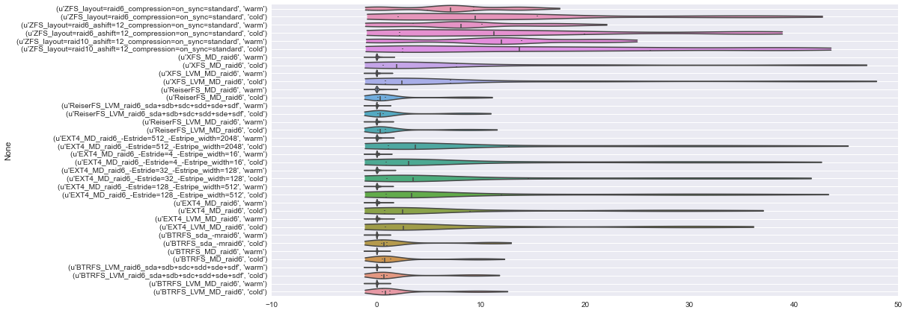
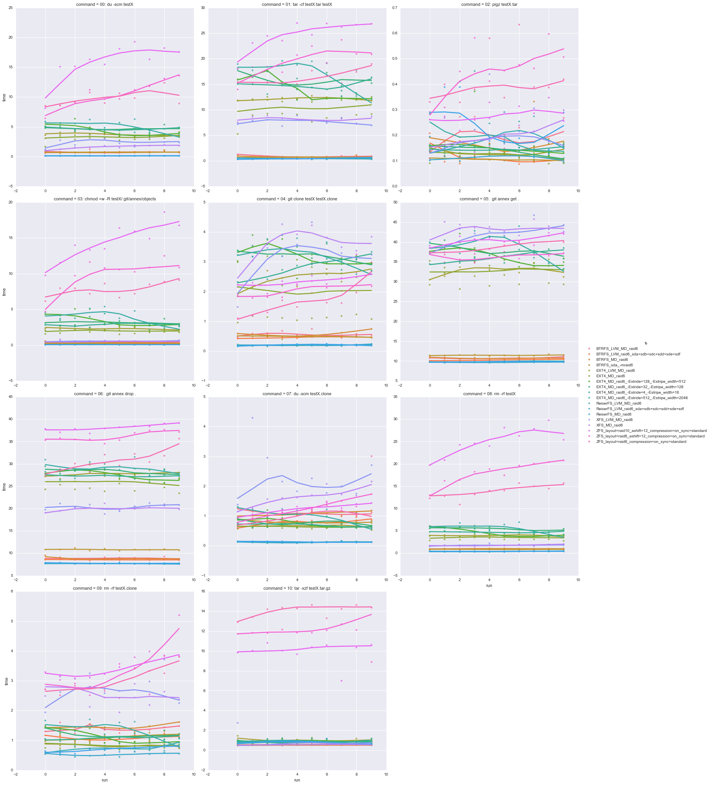
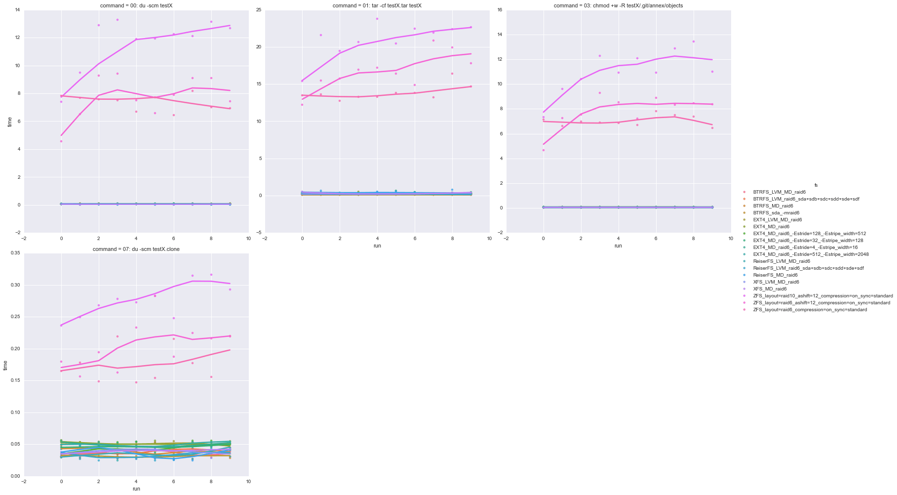
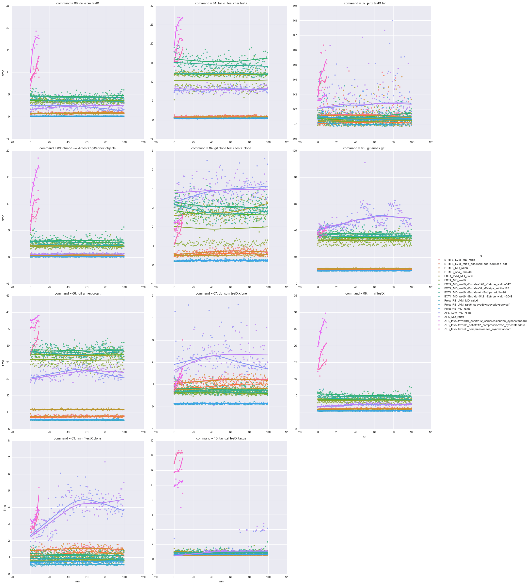
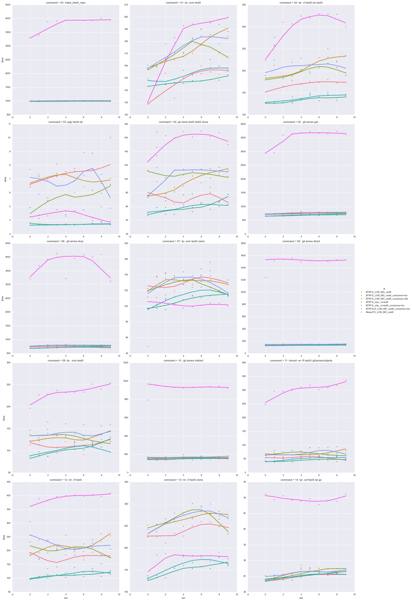

Problem statement
For the DataLad project we will establish a large number of git-annex repositories. Majority of those git-annex repositories will not contain any data, but rather a lot of empty files and/or broken symlinks. Some data sharing projects which we are going to cover contain thousands and even millions of files (e.g. HCP500 release S3 bucket contained over 5 million files). Originally, we had a very nice experience with ZoL (ZFS on Linux) on computational clusters we administer/use. Its volume management, data integrity checking, and various features (snapshotting, etc) are very appealing and served us well before. So ZFS was a logical choice to deploy for our DataLad development/storage server(s). But unfortunately, during development we ran into complete system stalls (which thanks to ZoL developers were promptly resolved), and overall very slow performance (even with SSD L2ARC caches and relatively large RAM on those boxes). So it became important to investigate if we were indeed hitting the limits of contemporary conventional file-system designs while dealing with large number of files, or just getting bound by ZoL.
System setup
All the benchmarks were ran on a recently purchased server
- CPU: Intel(R) Xeon(R) CPU E5-1607 v2 @ 3.00GHz (quad core)
- RAM: 64GB (registered)
- OS: Debian Jessie (8.1) amd64 build, with NeuroDebian and ZoL repositories enabled
- Kernel: 3.16.7-ckt9-3~deb8u1 (Debian: 3.16.0-4-amd64)
- ZoL/ZFS module: 0.6.4-15-7fec46
- Btrfs tools: originally 3.17 (as in Jessie) but then tested a single setup initiated with 4.0 tools (backport coming from NeuroDebian repository)
- Drives: 6 Seagate Constellation ES.3 (ST4000NM0033-9ZM170, fw SN04) on an LSI SAS3008 HBA
Scripts
test_fs.py script was created to initiate a range of prototypical file-system setups, with software raid/MD (redundancy), LVM (volume management) and various file systems (EXT4, XFS, ZFS, ReiserFS, Btrfs) in various configurations. We tested typical operations in the life-time of a git/annex repository — creation (only for larger repositories test), du, chmod, git clone, git annex get, git annex (in)direct, tar etc — full list is available in results tables below.
Results
Below we present results of the analysis of collected timings, which in its entirety is available as IPython notebook with all the necessary data in the repository if you would like to have an alternative analysis or visualization done since presentation here is quite messy.
Overall verdict is: we are going for Software Raid
(RAID6) + LVM (scalability) + Btrfs (performance) as our setup with
robust volume management (snapper tool providing snapshots management) and
good performance (with tolerable impact from enabled compression). Btrfs
exhibited robust performance across a wide range of meta-information
utilization, while ReiserFS — the next contender — failed to
scale (although it may have behaved better with some tune up/options —
we didn't explore). ZoL/ZFS quickly became way too slow to be even properly
tested and thus was not considered for our case. Additional features of
Btrfs, such as COW (copy-on-write) can already be utilized by git-annex
so providing Btrfs additional bonus points in our decision. The choice of
compression (lzo vs zlib) for Btrfs did not have a clear winner, and impact
from compression was not completely detrimental (although went up to ~30% on
git clone operation overall impact due to compression).
Disclaimer YMMV. We have tested file-systems on quite an
obscure setup, which is very heavy on meta-information without much of actual
data being stored — lots of tiny files with as many symlinks and
directories (under .git/annex/objects). Though, majority of the
benchmarked commands (e.g., chmod, du) were meta-information access heavy,
so even if large data files were stored we would expect similar performance
in those cases.
Small repositories test
Initial test consisted of creating relatively small repositories each containing 100 files in 20 directories added to git-annex. Multiple rounds (without removing previously created test directories/repositories) were ran, thus slowly growing impact on the file-system. ZFS file-system setups ran only 10 rounds of such tests, while 100 times for other file-systems.
Following results present timings on the first 10 rounds across file systems on "cold" runs of the commands. Ratings/timing table presents overall rating (0 — is the best, estimated as a median among ratings across all benchmark commands) with mean timing (across rounds) per each command.
ports_to_dataframe(load_reports('simpleannex_ndirs=20_nfiles=100-', equal_length=True))
summary_plots(df, 'cold', gross_violins=True)
Got 19 reports
# of reports per each FS: [10, 10, 10, 10, 10, 10, 10, 10, 10, 10, 10, 10, 10, 10, 10, 10, 10, 10, 10]
Got 2850 entries total
Gross-rating/timing for each file-system/per each command
| File system | Rating | 00: du -scm testX | 01: tar -cf testX.tar testX | 02: pigz testX.tar | 03: chmod +w -R testX/.git/annex/objects | 04: git clone testX testX.clone | 05: git annex get . | 06: git annex drop . | 07: du -scm testX.clone | 08: rm -rf testX | 09: rm -rf testX.clone | 10: tar -xzf testX.tar.gz |
|---|---|---|---|---|---|---|---|---|---|---|---|---|
| Btrfs_LVM_MD_raid6 | 6 | 6/0.78 | 6/0.85 | 9/0.19 | 6/0.41 | 6/0.58 | 5/10.77 | 5/8.87 | 12/1.09 | 5/0.98 | 11/1.39 | 4/0.59 |
| Btrfs_LVM_raid6_sda+sdb+sdc+sdd+sde+sdf | 3 | 4/0.73 | 3/0.70 | 1/0.12 | 3/0.23 | 3/0.47 | 3/10.26 | 3/8.51 | 7/0.77 | 4/0.90 | 5/1.07 | 0/0.51 |
| Btrfs_MD_raid6 | 5 | 5/0.74 | 5/0.79 | 8/0.18 | 5/0.37 | 5/0.56 | 4/10.72 | 4/8.79 | 11/1.05 | 6/0.98 | 12/1.43 | 3/0.57 |
| Btrfs_sda_-mraid6 | 4 | 3/0.73 | 4/0.72 | 0/0.12 | 4/0.28 | 4/0.48 | 6/11.46 | 6/10.80 | 8/0.79 | 3/0.87 | 7/1.11 | 1/0.56 |
| EXT4_LVM_MD_raid6 | 10 | 10/3.73 | 10/12.15 | 3/0.13 | 10/2.29 | 11/2.48 | 8/32.87 | 12/27.71 | 4/0.67 | 10/3.95 | 3/0.83 | 14/1.01 |
| EXT4_MD_raid6 | 9 | 9/3.24 | 9/10.30 | 2/0.13 | 9/2.02 | 8/2.03 | 7/32.71 | 9/25.91 | 3/0.65 | 9/3.51 | 4/0.84 | 11/0.90 |
| EXT4_MD_raid6_-Estride=128_-Estripe_width=512 | 11 | 11/4.37 | 11/14.19 | 7/0.17 | 13/3.56 | 15/3.17 | 9/36.24 | 11/27.60 | 6/0.77 | 11/4.61 | 8/1.11 | 12/0.92 |
| EXT4_MD_raid6_-Estride=32_-Estripe_width=128 | 12 | 13/4.62 | 13/15.83 | 6/0.15 | 12/3.20 | 16/3.18 | 12/37.88 | 13/28.28 | 9/0.80 | 13/5.43 | 9/1.20 | 10/0.89 |
| EXT4_MD_raid6_-Estride=4_-Estripe_width=16 | 11 | 12/4.56 | 12/14.57 | 5/0.14 | 11/3.00 | 12/3.05 | 11/36.53 | 10/27.30 | 5/0.73 | 12/4.72 | 6/1.07 | 8/0.84 |
| EXT4_MD_raid6_-Estride=512_-Estripe_width=2048 | 14 | 14/5.09 | 15/16.87 | 12/0.21 | 14/3.83 | 14/3.16 | 14/38.74 | 14/29.01 | 10/0.98 | 14/5.50 | 10/1.33 | 13/0.94 |
| ReiserFS_LVM_MD_raid6 | 1 | 0/0.12 | 0/0.43 | 11/0.21 | 1/0.08 | 0/0.20 | 2/9.93 | 1/7.69 | 1/0.13 | 0/0.39 | 2/0.74 | 6/0.80 |
| ReiserFS_LVM_raid6_sda+sdb+sdc+sdd+sde+sdf | 1 | 2/0.12 | 2/0.48 | 4/0.13 | 0/0.07 | 1/0.20 | 0/9.67 | 0/7.65 | 0/0.11 | 1/0.39 | 0/0.53 | 5/0.75 |
| ReiserFS_MD_raid6 | 2 | 1/0.12 | 1/0.44 | 14/0.22 | 2/0.09 | 2/0.21 | 1/9.84 | 2/7.76 | 2/0.13 | 2/0.46 | 1/0.70 | 7/0.83 |
| XFS_LVM_MD_raid6 | 9 | 8/2.45 | 7/7.66 | 13/0.21 | 8/0.57 | 13/3.15 | 16/42.24 | 8/20.34 | 17/2.31 | 8/1.81 | 14/2.72 | 9/0.88 |
| XFS_MD_raid6 | 8 | 7/1.61 | 8/8.13 | 10/0.20 | 7/0.55 | 17/3.62 | 17/43.25 | 7/20.07 | 16/1.65 | 7/1.76 | 13/2.56 | 2/0.57 |
| ZFS_layout=raid10_ashift=12_compression=on_sync=standard | 17 | 17/15.97 | 17/24.75 | 15/0.27 | 17/14.48 | 10/2.41 | 15/40.41 | 17/38.07 | 15/1.23 | 17/25.08 | 17/3.44 | 15/9.94 |
| ZFS_layout=raid6_ashift=12_compression=on_sync=standard | 16 | 16/10.44 | 16/19.59 | 17/0.45 | 16/9.91 | 9/2.08 | 10/36.31 | 16/36.11 | 14/1.22 | 16/18.03 | 16/3.25 | 16/11.71 |
| ZFS_layout=raid6_compression=on_sync=standard | 15 | 15/9.96 | 14/16.24 | 16/0.42 | 15/7.83 | 7/1.69 | 13/38.64 | 15/30.65 | 13/1.18 | 15/13.87 | 15/2.97 | 17/14.04 |
Gross time per each file-system
{kind=link}
Execution time per each command across file-systems and across runs
{kind=link}
and "warm" (re-running the same command thus utilizing possible caching of meta-information and data) runs:
summary_plots(df, 'warm')
Gross-rating/timing for each file-system/per each command
| File system | Rating | 00: du -scm testX | 01: tar -cf testX.tar testX | 03: chmod +w -R testX/.git/annex/objects | 07: du -scm testX.clone |
|---|---|---|---|---|---|
| Btrfs_LVM_MD_raid6 | 4.0 | 8/0.07 | 3/0.14 | 5/0.05 | 3/0.04 |
| Btrfs_LVM_raid6_sda+sdb+sdc+sdd+sde+sdf | 6.0 | 7/0.07 | 2/0.14 | 6/0.05 | 6/0.04 |
| Btrfs_MD_raid6 | 4.0 | 5/0.06 | 0/0.12 | 3/0.05 | 8/0.04 |
| Btrfs_sda_-mraid6 | 3.5 | 6/0.07 | 1/0.13 | 7/0.05 | 0/0.03 |
| EXT4_LVM_MD_raid6 | 11.5 | 9/0.08 | 11/0.31 | 12/0.08 | 14/0.05 |
| EXT4_MD_raid6 | 12.5 | 12/0.08 | 7/0.29 | 13/0.08 | 13/0.05 |
| EXT4_MD_raid6_-Estride=128_-Estripe_width=512 | 10.0 | 10/0.08 | 10/0.31 | 11/0.08 | 9/0.04 |
| EXT4_MD_raid6_-Estride=32_-Estripe_width=128 | 12.0 | 11/0.08 | 13/0.35 | 14/0.08 | 11/0.05 |
| EXT4_MD_raid6_-Estride=4_-Estripe_width=16 | 9.5 | 14/0.08 | 5/0.26 | 9/0.08 | 10/0.05 |
| EXT4_MD_raid6_-Estride=512_-Estripe_width=2048 | 12.0 | 13/0.08 | 12/0.34 | 10/0.08 | 12/0.05 |
| ReiserFS_LVM_MD_raid6 | 1.5 | 0/0.05 | 9/0.30 | 1/0.05 | 2/0.04 |
| ReiserFS_LVM_raid6_sda+sdb+sdc+sdd+sde+sdf | 2.0 | 3/0.06 | 4/0.17 | 0/0.04 | 1/0.03 |
| ReiserFS_MD_raid6 | 4.0 | 4/0.06 | 14/0.42 | 2/0.05 | 4/0.04 |
| XFS_LVM_MD_raid6 | 4.5 | 2/0.06 | 6/0.27 | 4/0.05 | 5/0.04 |
| XFS_MD_raid6 | 7.5 | 1/0.05 | 8/0.29 | 8/0.06 | 7/0.04 |
| ZFS_layout=raid10_ashift=12_compression=on_sync=standard | 17.0 | 17/11.71 | 17/21.08 | 17/11.09 | 17/0.28 |
| ZFS_layout=raid6_ashift=12_compression=on_sync=standard | 16.0 | 16/7.74 | 16/16.75 | 16/7.85 | 16/0.21 |
| ZFS_layout=raid6_compression=on_sync=standard | 15.0 | 15/7.36 | 15/13.83 | 15/7.03 | 15/0.18 |
Execution time per each command across file-systems and across runs
{kind=link}
In both of the above reports (cold and warm) on small repositories we can see that ZFS performs quite poorly (and also becomes slower with higher FS utilization on many commands) but still on the same order as XFS and EXT4, while Btrfs and ReiserFS perform much smoother with ReiserFS being the most efficient.
Following plots shows all 100 rounds:
df = reports_to_dataframe(load_reports('simpleannex_ndirs=20_nfiles=100-', equal_length=False))
summary_plots(df, 'cold')
Got 19 reports
# of reports per each FS: [10, 100, 100, 100, 100, 100, 100, 100, 100, 10, 10, 100, 100, 100, 100, 100, 100, 100, 100]
Got 24450 entries total
Gross-rating/timing for each file-system/per each command
| File system | Rating | 00: du -scm testX | 01: tar -cf testX.tar testX | 02: pigz testX.tar | 03: chmod +w -R testX/.git/annex/objects | 04: git clone testX testX.clone | 05: git annex get . | 06: git annex drop . | 07: du -scm testX.clone | 08: rm -rf testX | 09: rm -rf testX.clone | 10: tar -xzf testX.tar.gz |
|---|---|---|---|---|---|---|---|---|---|---|---|---|
| Btrfs_LVM_MD_raid6 | 6 | 5/0.84 | 6/0.95 | 12/0.19 | 6/0.45 | 6/0.69 | 4/10.99 | 5/8.87 | 13/1.19 | 6/1.13 | 12/1.51 | 3/0.58 |
| Btrfs_LVM_raid6_sda+sdb+sdc+sdd+sde+sdf | 4 | 4/0.79 | 4/0.76 | 2/0.12 | 3/0.27 | 4/0.57 | 3/10.45 | 3/8.59 | 10/0.92 | 4/0.94 | 10/1.23 | 0/0.54 |
| Btrfs_MD_raid6 | 5 | 6/0.84 | 5/0.91 | 11/0.18 | 5/0.44 | 5/0.69 | 5/11.00 | 4/8.84 | 11/1.18 | 5/1.09 | 11/1.50 | 2/0.58 |
| Btrfs_sda_-mraid6 | 4 | 3/0.74 | 3/0.73 | 4/0.14 | 4/0.28 | 3/0.52 | 6/11.55 | 6/10.84 | 9/0.82 | 3/0.91 | 9/1.18 | 1/0.55 |
| EXT4_LVM_MD_raid6 | 10 | 10/3.64 | 10/11.99 | 5/0.14 | 10/2.26 | 12/2.80 | 8/33.39 | 10/27.15 | 4/0.65 | 10/3.89 | 3/0.84 | 11/0.94 |
| EXT4_MD_raid6 | 8 | 9/3.27 | 9/10.35 | 1/0.12 | 9/2.05 | 8/1.94 | 7/32.69 | 9/25.78 | 3/0.62 | 9/3.51 | 4/0.85 | 8/0.85 |
| EXT4_MD_raid6_-Estride=128_-Estripe_width=512 | 11 | 11/3.66 | 11/12.28 | 3/0.14 | 13/2.91 | 11/2.71 | 9/35.04 | 11/27.37 | 5/0.66 | 11/3.97 | 5/0.94 | 9/0.87 |
| EXT4_MD_raid6_-Estride=32_-Estripe_width=128 | 14 | 14/4.66 | 14/15.62 | 10/0.15 | 14/3.28 | 15/3.09 | 13/37.86 | 14/28.71 | 8/0.80 | 14/5.24 | 8/1.16 | 12/0.96 |
| EXT4_MD_raid6_-Estride=4_-Estripe_width=16 | 12 | 13/4.40 | 13/14.64 | 6/0.15 | 12/2.84 | 14/3.06 | 12/37.51 | 13/28.21 | 7/0.76 | 13/4.76 | 7/1.11 | 10/0.92 |
| EXT4_MD_raid6_-Estride=512_-Estripe_width=2048 | 11 | 12/3.75 | 12/12.64 | 9/0.15 | 11/2.45 | 13/2.81 | 10/35.94 | 12/27.76 | 6/0.70 | 12/4.17 | 6/0.97 | 7/0.84 |
| ReiserFS_LVM_MD_raid6 | 2 | 0/0.13 | 2/0.47 | 7/0.15 | 2/0.09 | 1/0.23 | 2/9.96 | 1/7.73 | 2/0.14 | 0/0.42 | 2/0.78 | 5/0.65 |
| ReiserFS_LVM_raid6_sda+sdb+sdc+sdd+sde+sdf | 0 | 2/0.13 | 0/0.43 | 0/0.10 | 0/0.09 | 0/0.22 | 0/9.77 | 0/7.60 | 0/0.13 | 1/0.43 | 0/0.58 | 4/0.62 |
| ReiserFS_MD_raid6 | 1 | 1/0.13 | 1/0.44 | 8/0.15 | 1/0.09 | 2/0.23 | 1/9.94 | 2/7.74 | 1/0.14 | 2/0.43 | 1/0.74 | 6/0.65 |
| XFS_LVM_MD_raid6 | 13 | 7/2.37 | 7/8.02 | 13/0.26 | 8/0.61 | 16/3.93 | 16/48.10 | 8/22.02 | 17/2.29 | 7/2.21 | 17/3.90 | 14/1.25 |
| XFS_MD_raid6 | 13 | 8/2.44 | 8/8.03 | 14/0.26 | 7/0.60 | 17/3.93 | 17/48.71 | 7/21.86 | 16/2.27 | 8/2.30 | 16/3.84 | 13/1.15 |
| ZFS_layout=raid10_ashift=12_compression=on_sync=standard | 15 | 17/15.97 | 17/24.75 | 15/0.27 | 17/14.48 | 10/2.41 | 15/40.41 | 17/38.07 | 15/1.23 | 17/25.08 | 15/3.44 | 15/9.94 |
| ZFS_layout=raid6_ashift=12_compression=on_sync=standard | 16 | 16/10.44 | 16/19.59 | 17/0.45 | 16/9.91 | 9/2.08 | 11/36.31 | 16/36.11 | 14/1.22 | 16/18.03 | 14/3.25 | 16/11.71 |
| ZFS_layout=raid6_compression=on_sync=standard | 15 | 15/9.96 | 15/16.24 | 16/0.42 | 15/7.83 | 7/1.69 | 14/38.64 | 15/30.65 | 12/1.18 | 15/13.87 | 13/2.97 | 17/14.04 |
Execution time per each command across file-systems and across runs
{kind=link}
Middle-sized repositories test
For this test we have decided to get closer to typical middle size repositories with 1000 files in each of the 100 directories (thus 100,000 original files per repository) and run 10 rounds. Unfortunately ZFS runs were taking way to long (sample single round took more than 24h) so they were interrupted.
Surprisingly ReiserFS performance detremented quite significantly, bringing Btrfs into the winners. Effect from the choice of compression (lzo vs zlib) wasn't clearly pronounced so we decided to go with lzo.
df = reports_to_dataframe(load_reports('simpleannex-big_ndirs=100_nfiles=1000-'))
summary_plots(df, 'cold')
Got 7 reports
# of reports per each FS: [10, 10, 10, 10, 10, 10, 10]
Got 1540 entries total
Gross-rating/timing for each file-system/per each command
| File system | Rating | 00: make_testX_repo | 01: du -scm testX | 02: tar -cf testX.tar testX | 03: pigz testX.tar | 04: git clone testX testX.clone | 05: git annex get . | 06: git annex drop . | 07: du -scm testX.clone | 08: git annex direct | 09: du -scm testX | 10: git annex indirect | 11: chmod +w -R testX/.git/annex/objects | 12: rm -rf testX | 13: rm -rf testX.clone | 14: tar -xzf testX.tar.gz |
|---|---|---|---|---|---|---|---|---|---|---|---|---|---|---|---|---|
| Btrfs_LVM_MD_raid6 | 2 | 3/989.77 | 1/148.13 | 2/171.24 | 6/7.31 | 2/73.81 | 2/737.68 | 2/747.67 | 4/130.42 | 2/134.84 | 2/112.36 | 2/151.61 | 2/53.61 | 2/179.59 | 3/241.57 | 0/24.78 |
| Btrfs_LVM_MD_raid6_compress=lzo | 4 | 0/984.39 | 4/174.24 | 5/217.06 | 4/6.61 | 3/99.37 | 4/767.62 | 3/781.16 | 5/130.89 | 4/145.35 | 4/133.41 | 4/166.22 | 4/69.79 | 5/218.48 | 4/263.55 | 3/25.84 |
| Btrfs_LVM_MD_raid6_compress=zlib | 3 | 5/1005.41 | 3/171.68 | 3/203.35 | 3/5.64 | 5/110.36 | 3/754.58 | 4/782.21 | 3/129.41 | 3/143.20 | 3/129.58 | 3/161.01 | 3/67.79 | 3/203.25 | 5/266.14 | 4/26.00 |
| Btrfs_sda_-mraid6 | 0 | 4/995.82 | 0/147.76 | 0/133.56 | 1/3.71 | 0/59.82 | 0/676.95 | 0/707.02 | 1/107.48 | 0/129.57 | 0/102.28 | 0/150.60 | 0/46.16 | 0/112.55 | 0/150.98 | 1/25.26 |
| Btrfs_sda_-mraid6_compress=lzo | 1 | 2/988.97 | 2/153.09 | 1/137.83 | 0/3.68 | 1/60.24 | 1/697.89 | 1/726.68 | 2/113.59 | 1/131.69 | 1/104.67 | 1/151.36 | 1/49.65 | 1/116.30 | 1/161.57 | 2/25.36 |
| Btrfsv4_LVM_MD_raid6_compress=lzo | 5 | 1/985.17 | 5/175.95 | 4/209.24 | 5/6.90 | 4/105.76 | 5/770.36 | 5/793.40 | 6/131.05 | 5/145.72 | 5/137.28 | 5/166.84 | 5/70.68 | 4/214.00 | 6/267.73 | 5/26.08 |
| ReiserFS_LVM_MD_raid6 | 6 | 6/3815.34 | 6/179.49 | 6/302.80 | 2/4.37 | 6/156.06 | 6/3519.49 | 6/3741.88 | 0/96.61 | 6/1493.27 | 6/232.94 | 6/919.61 | 6/303.28 | 6/388.45 | 2/178.23 | 6/49.54 |
Execution time per each command across file-systems and across runs
{kind=link}
summary_plots(df, 'warm')
Gross-rating/timing for each file-system/per each command
| File system | Rating | 01: du -scm testX | 02: tar -cf testX.tar testX | 07: du -scm testX.clone | 08: git annex direct | 09: du -scm testX | 10: git annex indirect | 11: chmod +w -R testX/.git/annex/objects |
|---|---|---|---|---|---|---|---|---|
| Btrfs_LVM_MD_raid6 | 1 | 2/2.21 | 0/5.05 | 0/0.97 | 4/0.01 | 1/2.45 | 2/0.01 | 0/2.23 |
| Btrfs_LVM_MD_raid6_compress=lzo | 3 | 3/2.22 | 3/5.36 | 3/0.99 | 5/0.01 | 3/2.48 | 0/0.01 | 1/2.24 |
| Btrfs_LVM_MD_raid6_compress=zlib | 3 | 1/2.21 | 5/6.40 | 1/0.97 | 1/0.01 | 4/2.49 | 3/0.01 | 4/2.49 |
| Btrfs_sda_-mraid6 | 3 | 6/2.27 | 1/5.14 | 5/1.00 | 3/0.01 | 5/2.49 | 1/0.01 | 2/2.26 |
| Btrfs_sda_-mraid6_compress=lzo | 4 | 5/2.25 | 2/5.18 | 4/0.99 | 0/0.01 | 6/2.50 | 6/0.01 | 3/2.35 |
| Btrfsv4_LVM_MD_raid6_compress=lzo | 4 | 4/2.24 | 4/5.95 | 2/0.97 | 2/0.01 | 2/2.48 | 4/0.01 | 5/2.71 |
| ReiserFS_LVM_MD_raid6 | 6 | 0/1.78 | 6/8.52 | 6/1.03 | 6/0.02 | 0/2.08 | 5/0.01 | 6/250.94 |
{kind=link}